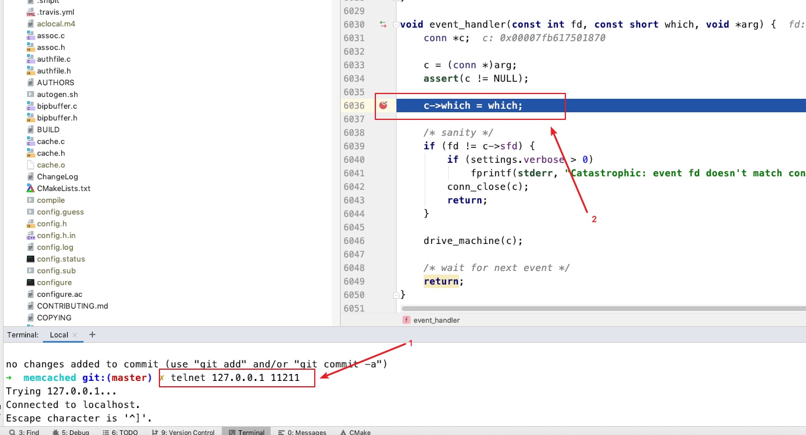
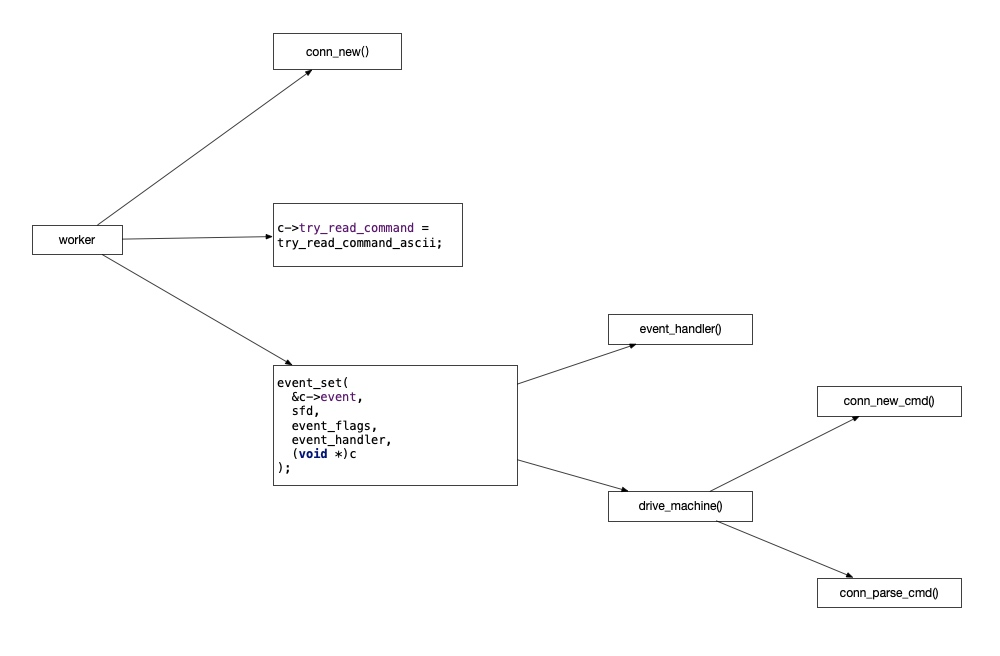

接上一篇redis网络通信模块，memcached的网络通信借助了libevent库，简化了底层的网络读写事件的封装，但是memcached多了多线程处理
核心流程：客户端 -> 服务端memcached master -> master fd -> master accept(fd) -> client fd -> worker线程处理client fd所有读写事件
master处理流程

master处理流程在main()函数中，虽然main函数共有6892-8334共计1442行代码，6892->8104共计1212行都是在解析memcached的配置、和做一些主流程无关的小操作。
main中的核心代码不到230行(8104->8334)，还是非常容易分析的
master做的核心工作有一下几点
创建libevent事件循环-event_base_new_with_config()
这个是libevent事件循环的核心共享结构体，后面的事件注册，启动等都需要这个结构体
这里需要注意的是memcached使用了带参的event_base_new()函数，参数是libevent配置
ev_config = event_config_new();
event_config_set_flag(ev_config, EVENT_BASE_FLAG_NOLOCK);
main_base = event_base_new_with_config(ev_config);
不为event_base分配锁，这样可以提高一些libevent的性能，虽然这样可能导致多线程下使用event_base变得不安全，但是memcached的event_base是一个线程一个event_base，所以不存在这个问题
启动tcp服务器
memcached.c::server_socket()函数中使用socket()和bind()方法启动了tcp服务器，并得到这个代表memcached server的fd
核心代码如下：
static int server_socket(const char *interface,
int port,
enum network_transport transport,
FILE *portnumber_file, bool ssl_enabled) {
// ...
for (next= ai; next; next= next->ai_next) {
conn *listen_conn_add;
if ((sfd = new_socket(next)) == -1) {
// ...
continue;
}
// 省略ipv6逻辑...
if (bind(sfd, next->ai_addr, next->ai_addrlen) == -1) {
// ...
close(sfd);
continue;
} else {
success++;
if (!IS_UDP(transport) && listen(sfd, settings.backlog) == -1) {
// ...
}
// ...
}
// 省略udp逻辑...
if (!(listen_conn_add = conn_new(sfd, conn_listening,
EV_READ | EV_PERSIST, 1,
transport, main_base, NULL))) {
// ...
}
// ...
}
注册libevent事件循环事件
虽然memcached的main()函数一开始就创建了master的libevent事件循环，但是使用是非常靠后的，在worker线程都初始化完成后，才创建tcp服务器，并为master的event_base注册回调函数
master的event_handler回调函数如下：
void event_handler(const int fd, const short which, void *arg) {
conn *c;
c = (conn *)arg;
assert(c != NULL);
c->which = which;
/* sanity */
if (fd != c->sfd) {
if (settings.verbose > 0)
fprintf(stderr, "Catastrophic: event fd doesn't match conn fd!\n");
conn_close(c);
return;
}
drive_machine(c);
/* wait for next event */
return;
}
可以看到这个event_handler里面只是做了一些错误检查，然后就立即交给drive_machine函数进行处理了
这个drive_machine主要是对c->state变量进行逻辑判断处理，对于master的c变量的state属性，它的值在memcached.c:653被设置了，值是memcached.c::6242行传递进去的，为：conn_listening，drive_machine对应的逻辑如下
addrlen = sizeof(addr);
#ifdef HAVE_ACCEPT4
if (use_accept4) {
sfd = accept4(c->sfd, (struct sockaddr *)&addr, &addrlen, SOCK_NONBLOCK);
} else {
sfd = accept(c->sfd, (struct sockaddr *)&addr, &addrlen);
}
#else
sfd = accept(c->sfd, (struct sockaddr *)&addr, &addrlen);
#endif
// 省略流程无关代码...
#ifdef TLS
// ssl相关逻辑省略...
#endif
dispatch_conn_new(sfd, conn_new_cmd, EV_READ | EV_PERSIST,
DATA_BUFFER_SIZE, c->transport, ssl_v);
}
stop = true;
可以看到master线程的tcp服务器有新客户端连接进入后，drive_machine处理逻辑会立即获取这个memcached客户端连接fd为sfd，并交给了dispatch_conn_new函数进行处理
dispatch_conn_new函数核心逻辑如下
void dispatch_conn_new(int sfd, enum conn_states init_state, int event_flags,
int read_buffer_size, enum network_transport transport, void *ssl) {
CQ_ITEM *item = cqi_new();
char buf[1];
if (item == NULL) {
close(sfd);
/* given that malloc failed this may also fail, but let's try */
fprintf(stderr, "Failed to allocate memory for connection object\n");
return ;
}
int tid = (last_thread + 1) % settings.num_threads;
LIBEVENT_THREAD *thread = threads + tid;
last_thread = tid;
item->sfd = sfd;
item->init_state = init_state;
item->event_flags = event_flags;
item->read_buffer_size = read_buffer_size;
item->transport = transport;
item->mode = queue_new_conn;
item->ssl = ssl;
cq_push(thread->new_conn_queue, item);
MEMCACHED_CONN_DISPATCH(sfd, thread->thread_id);
buf[0] = 'c';
if (write(thread->notify_send_fd, buf, 1) != 1) {
perror("Writing to thread notify pipe");
}
}
这里面主要是
- 选择一个worker线程用于处理这个客户端连接后续的读写操作
- 声明了一个CQ_ITEM结构体代表这个客户端的连接，并保存到worker线程的new_conn_queue属性上，这个属性是个数组，并且被当成队列使用了
- 向worker线程的notify_send_fd属性发送一个字符'c'通知worker线程有新客户端连接分配给它了
后续worker线程的event_base监听到notify_receive_fd的可读事件就开始工作了, 因为这里使用pipe线程通信技术，所以notify_send_fd写数据，触发notify_receive_fd的可读事件，pipe线程通信技术参考：https://blog.csdn.net/robertkun/article/details/8095331
至此，memcached master线程，网络相关的主流程就走完了，剩下的事情就交给worker进程处理了
libevent启动时机
当客户端向memcached服务器写入输入时，可以使用clion进行断点测试，比如在event_handler上进行断点

conn_new()
memcached.c::conn_new()
注册事件回调
event_set(&c->event, sfd, event_flags, event_handler, (void *)c);
event_base_set(base, &c->event);
event_handler 就是设置的回调函数
worker处理流程

worker线程的回调在master里就指定好了，参考：thread.c::setup_thread()，worker的回调函数被指定为了thread_libevent_process，结合master的处理流程，这个worker的回调函数只有在master得到新连接时被触发
worker获取客户端连接
参考thread.c::thread_libevent_process()函数，核心代码如下
item = cq_pop(me->new_conn_queue);
c = conn_new(item->sfd, item->init_state, item->event_flags,
item->read_buffer_size, item->transport,
me->base, item->ssl);
if (c == NULL) {
// 省略错误处理...
} else {
c->thread = me;
#ifdef TLS
// 省略ssl逻辑...
#endif
}
worker调用cq_pop从队列中获取客户端连接后，然后就交给了conn_new函数进行处理
conn_new函数把客户端的读写事件交给了event_handler函数进行处理，核心代码如下
event_set(&c->event, sfd, event_flags, event_handler, (void *)c);
master也使用event_handler函数来处理master的事件，worker也使用event_handler处理事件，是不会冲突的，因为在event_handler里的drive_machine执行体中，会通过这个事件参数conn结构体的state属性的进行分支判断, worker的conn的state从CQ_ITEM获取，值为conn_new_cmd
客户端读写事件分发
客户端往memcached服务器发送数据，触发event_handler函数执行，此时state值为conn_new_cmd
对应drive_machine核心代码如下
while (!stop) {
case conn_new_cmd:
/* Only process nreqs at a time to avoid starving other
connections */
--nreqs;
if (nreqs >= 0) {
reset_cmd_handler(c);
} else {
// 异常处理逻辑...
}
break;
}
最上层是个无限循环，里面肯定有个出口，把请求交给了reset_cmd_handler()函数进行处理,核心代码如下
static void reset_cmd_handler(conn *c) {
// ...
if (c->rbytes > 0) {
conn_set_state(c, conn_parse_cmd);
} else {
conn_set_state(c, conn_waiting);
}
}
如果还有数据可以读取，就设置state为conn_parse_cmd状态，否则，进入conn_waiting状态
conn_parse_cmd
case conn_parse_cmd :
if (c->try_read_command(c) == 0) {
/* wee need more data! */
conn_set_state(c, conn_waiting);
}
break;
进行数据读取，然后将状态设置为conn_waiting, 这个try_read_command里面就对客户端的输入进行了处理，并把结果返回了客户端，参考: try_read_command_ascii
static int try_read_command_ascii(conn *c) {
char *el, *cont;
if (c->rbytes == 0)
return 0;
el = memchr(c->rcurr, '\n', c->rbytes);
if (!el) {
// 略过异常处理逻辑...
return 0;
}
cont = el + 1;
if ((el - c->rcurr) > 1 && *(el - 1) == '\r') {
el--;
}
*el = '\0';
assert(cont <= (c->rcurr + c->rbytes));
c->last_cmd_time = current_time;
process_command(c, c->rcurr);
c->rbytes -= (cont - c->rcurr);
c->rcurr = cont;
assert(c->rcurr <= (c->rbuf + c->rsize));
return 1;
}
调用process_command进行请求处理了，至此，memcached的网络处理到这里就结束了，参考memcached.c::process_command()
和redis对比
- memcached
一些注意的点
本文基于memcached master分支写成，参考：https://github.com/memcached/memcached
memcached初版没有多线程，多线程的worker处理是在后续加上的，参考github上的1.2.0初版：https://github.com/memcached/memcached/releases/tag/1.2.0
pthread_create函数用来创建线程
核心共享结构体LIBEVENT_THREAD
memcached使用的是多线程模型，而不是多进程模型，这一点非常重要，这意味着memcached的master线程和worker线程可以共享一些结构体变量，比如代表worker线程的LIBEVENT_THREAD结构体，源码如下
typedef struct {
pthread_t thread_id; /* unique ID of this thread */
struct event_base *base; /* libevent handle this thread uses */
struct event notify_event; /* listen event for notify pipe */
int notify_receive_fd; /* receiving end of notify pipe */
int notify_send_fd; /* sending end of notify pipe */
struct thread_stats stats; /* Stats generated by this thread */
struct conn_queue *new_conn_queue; /* queue of new connections to handle */
cache_t *suffix_cache; /* suffix cache */
#ifdef EXTSTORE
cache_t *io_cache; /* IO objects */
void *storage; /* data object for storage system */
#endif
logger *l; /* logger buffer */
void *lru_bump_buf; /* async LRU bump buffer */
#ifdef TLS
char *ssl_wbuf;
#endif
} LIBEVENT_THREAD;
memcached就是master通过往共享的notify_send_fd字段上写入数据，触发worker线程处理新的客户端连接fd的
master线程获取客户端连接fd，通过队列传给worker进行处理
thread.c::dispatch_conn_new() -> cq_push(thread->new_conn_queue, item) -> write(thread->notify_send_fd, buf, 1)
write(thread->notify_send_fd, buf, 1)就是触发worker线程的event_base，notify_send_fd的可读事件
memcached客户端连接状态枚举
enum conn_states {
conn_listening, /**< the socket which listens for connections */
conn_new_cmd, /**< Prepare connection for next command */
conn_waiting, /**< waiting for a readable socket */
conn_read, /**< reading in a command line */
conn_parse_cmd, /**< try to parse a command from the input buffer */
conn_write, /**< writing out a simple response */
conn_nread, /**< reading in a fixed number of bytes */
conn_swallow, /**< swallowing unnecessary bytes w/o storing */
conn_closing, /**< closing this connection */
conn_mwrite, /**< writing out many items sequentially */
conn_closed, /**< connection is closed */
conn_watch, /**< held by the logger thread as a watcher */
conn_max_state /**< Max state value (used for assertion) */
};
CQ_ITEM的state属性的值在memcached.c::5725被指定成了conn_new_cmd
master建立的tcp服务器，接收的memcached客户端连接均是fd，注意区分fd代表的角色